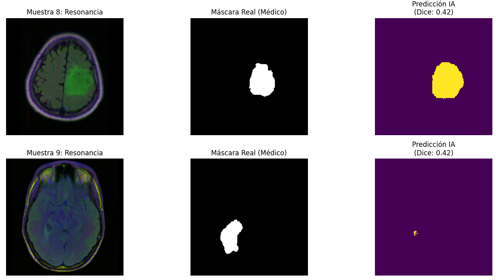

LGG MRI Segmentation
Las imágenes provienen del The Cancer Imaging Archive (TCIA), disponibles en Kaggle. El dataset contiene 3.929 imágenes de 110 pacientes con diagnóstico de glioma de bajo grado (LGG). Cada imagen tiene su correspondiente máscara de segmentación anotada manualmente por un especialista: píxeles blancos = tumor, píxeles negros = tejido sano.

Así viene el dataset: una imagen de resonancia magnética y su correspondiente máscara que indica en la zona blanca el tumor.
El dataset presenta un doble desbalance determinante:
| Tipo de desbalance | Valor | Impacto |
|---|---|---|
| A nivel de imagen | 65% sin tumor | El modelo vería más negativos que positivos |
| A nivel de píxel | 1.03% tumor | BCE ignoraría casi todos los píxeles positivos |
Seguimiento evolutivo del paciente
La evaluación se realizó clasificando cada píxel individual del set de test:
| Métrica | Valor | Interpretación |
|---|---|---|
| TN — Tejido sano | ~20 M píxeles | Gran mayoría de la imagen, bien clasificada |
| TP — Tumor detectado | 178 K píxeles | Objetivo a maximizar |
| FP — Falso positivo | 120 K píxeles | Bajo: el modelo no es "paranoico" |
| FN — Tumor no detectado | 169 K píxeles | Objetivo a reducir |
| Métrica | Valor |
|---|---|
| Precision | 0.597 |
| Recall | 0.513 |
| F1-Score / Dice | 0.552 |
Casos de éxito
Las siguientes imágenes muestran casos donde el modelo detectó correctamente la presencia de tumor. Se visualizan la resonancia magnética original, la máscara real anotada por el médico y la predicción de la IA con su coeficiente Dice individual.
En la Muestra 8 (Dice: 0.42) el modelo localiza y segmenta la masa tumoral con buena cobertura, aunque los bordes son algo más amplios que la máscara real. En la Muestra 9 (Dice: 0.42) el tumor es más pequeño: la predicción identifica la ubicación correctamente pero evidencia la dificultad del modelo para delimitar lesiones de menor tamaño — una oportunidad de mejora concreta.
La arquitectura U-Net logra pasar de una detección nula a una identificación de la masa tumoral. El modelo localiza correctamente los tumores pero falla en la delimitación de su tamaño y de los bordes — exactamente el patrón esperado en una primera iteración.
